Ready Study
Go Academy
An afterschool tutoring center in Cerritos, CA, run by neurodiversity-affirming educators. They had a logo, a small Instagram and an empty website domain. I built a brand guide, social kit and mock website the team can keep using without a designer, in a few hours a week.

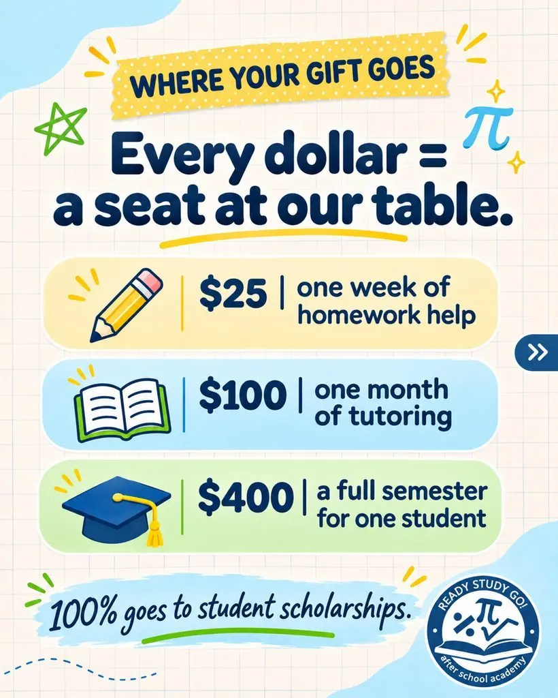
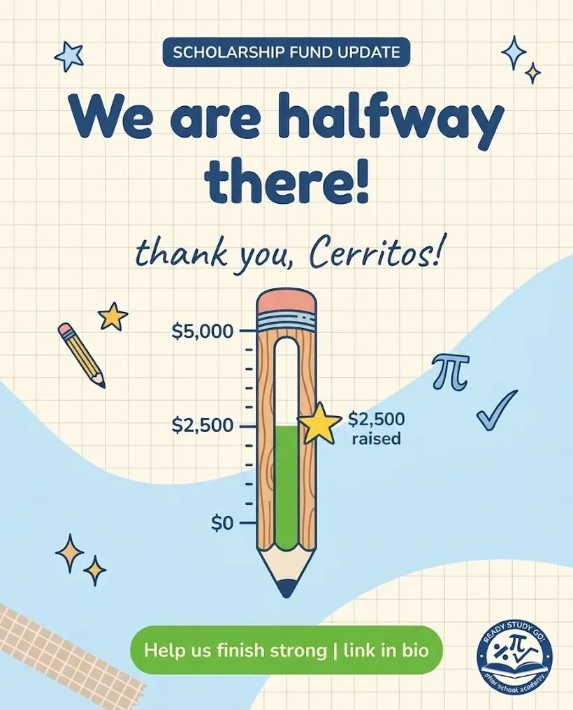
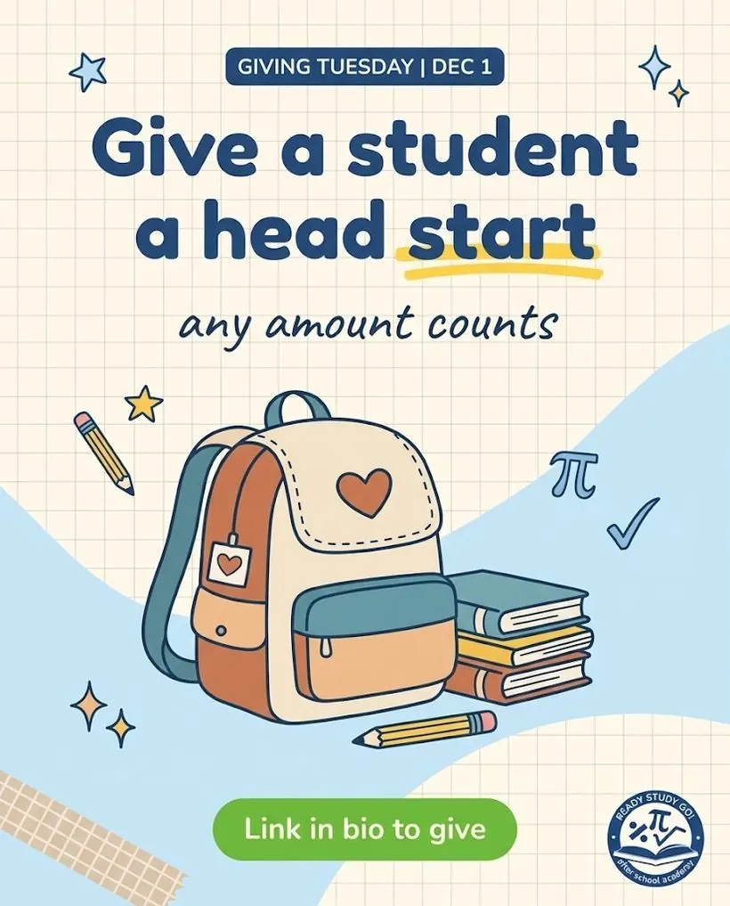
A brand system the team could use
- A look that feels like Ready Study Go every time, instead of a new style for each flyer.
- A plan that fits about 2 to 3 hours a week, with no designer on staff.
- A way to launch their new scholarship fund so families and local schools would see it and share it.
- A real home base online for the domain they already owned.
Everything starts from the brand guide. The posts use its colors, fonts and doodles. The plan tells the team what to post and when. The mock website reuses the same look and scholarship story, so a parent who taps the link in bio lands somewhere that feels like the posts they just saw.
Five colors, three fonts, a few house rules
Navy and white straight from the logo, plus the sky blue, leaf green and sunshine yellow they were already using. No student faces without a signed photo release, and no full student names.
A matching home for the brand
A one-page mock website in the same colors and type: programs, their approach, the scholarship fund, an Instagram feed using the new posts, and a visit section.
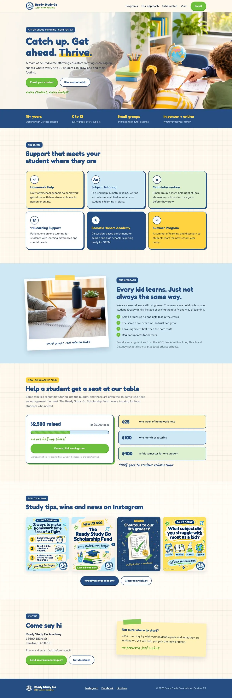

See what else I've built


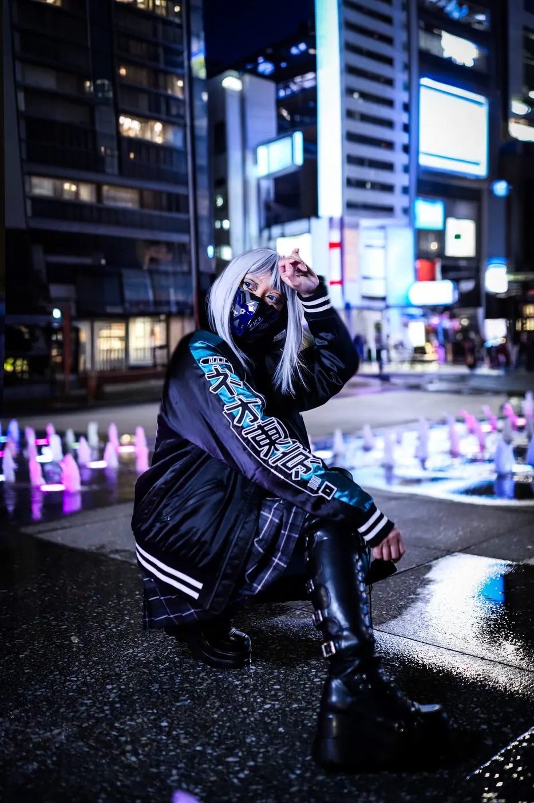
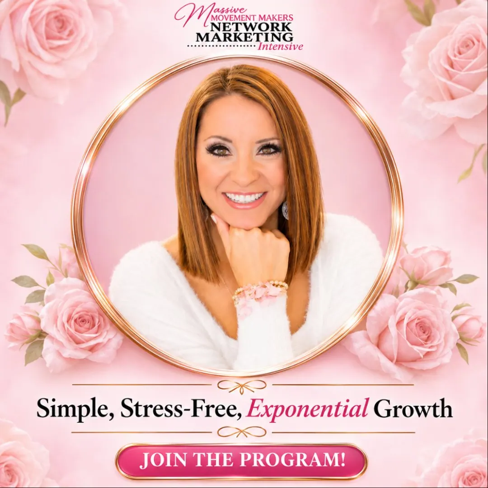
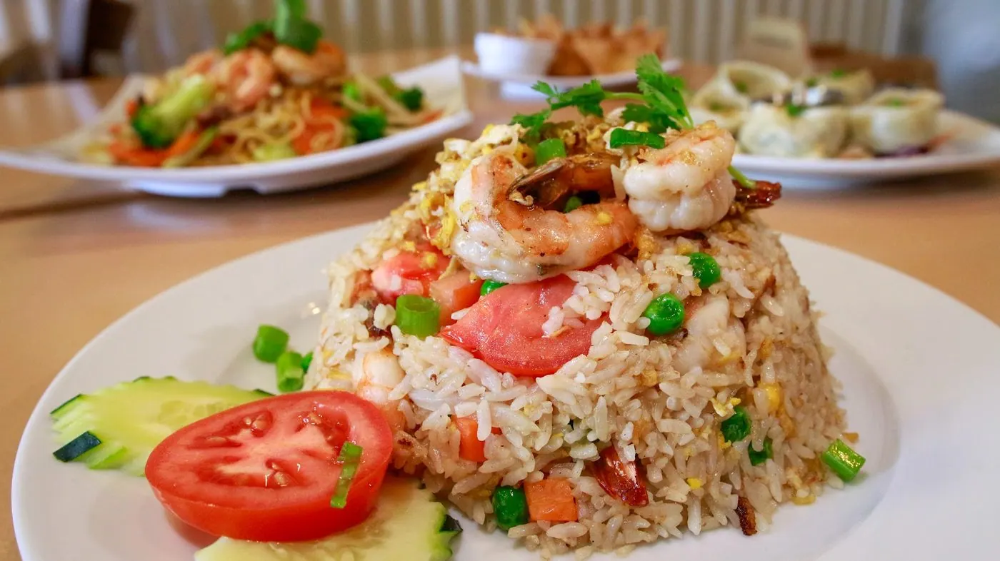
Tell me what you'd like to stop doing by hand
Send a short note about your team, your Shopify store or the repeat work you want help with. You don't need to know which service fits yet. I reply within 24 hours on weekdays.
Eight posts the team can reuse
A four-week scholarship fundraiser timed to land on Giving Tuesday, plus four everyday series: Study Tip Monday, tutor spotlights, Friday Win and a Saturday question. Each series has its own label and color so followers learn to spot it. I also wrote a reusable AI prompt so the team can keep making on-brand posts themselves.
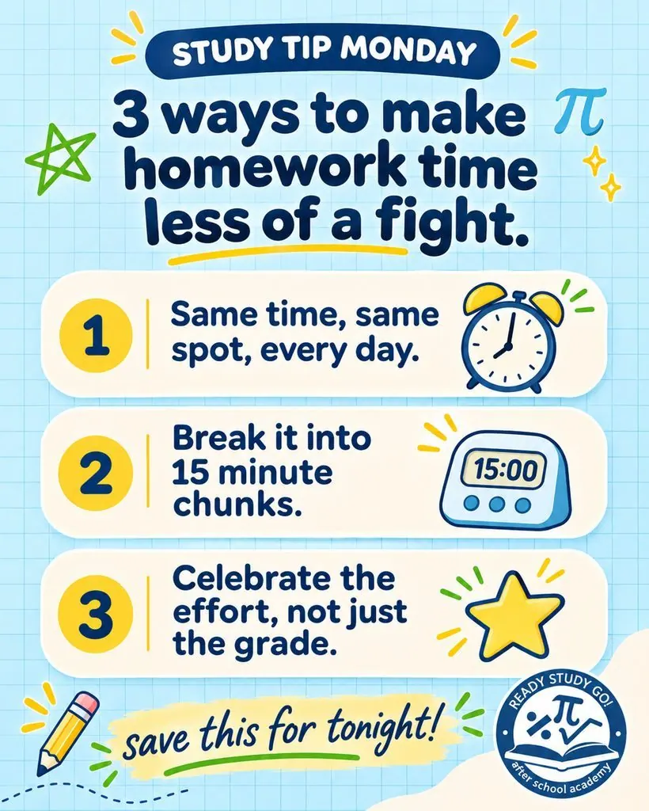
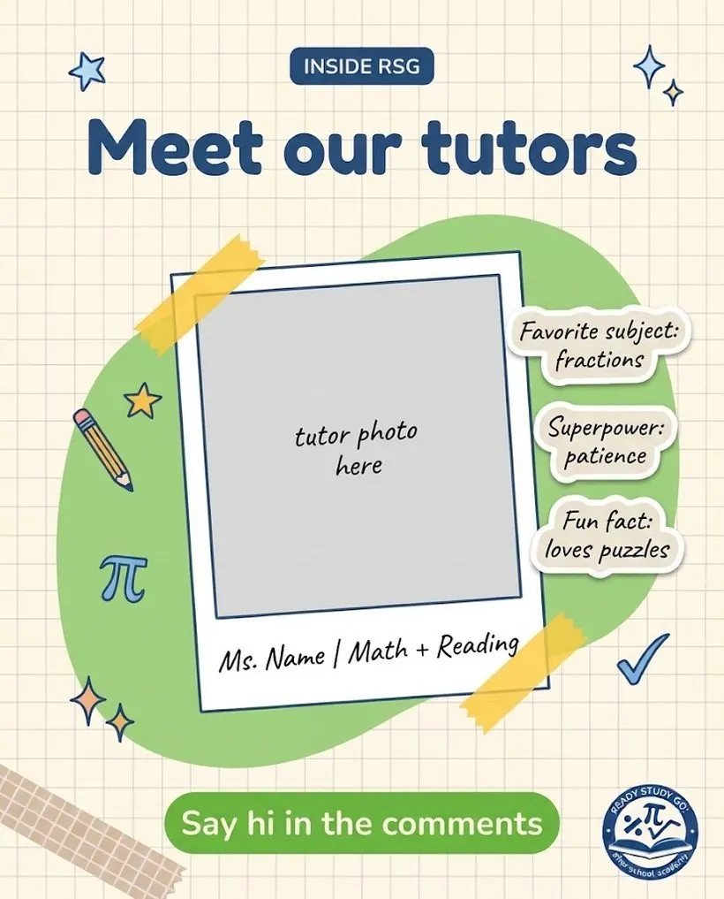
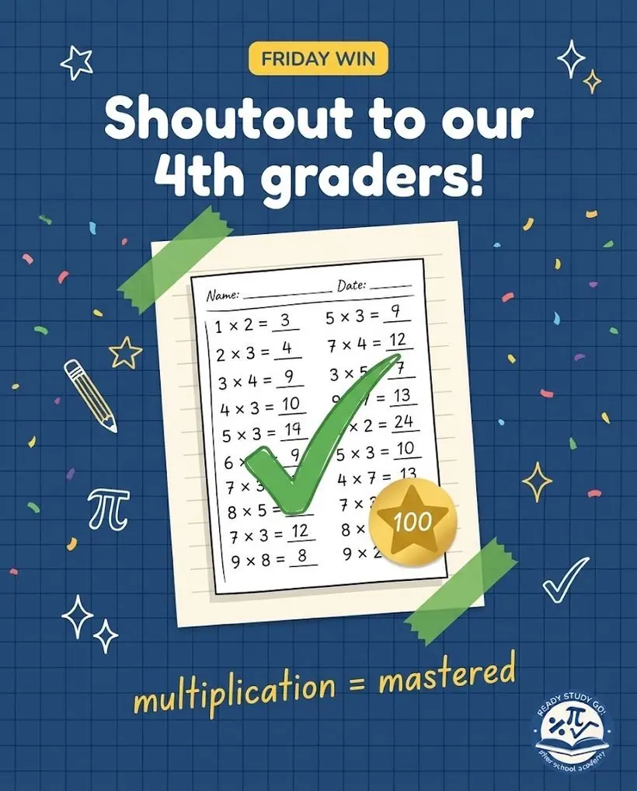
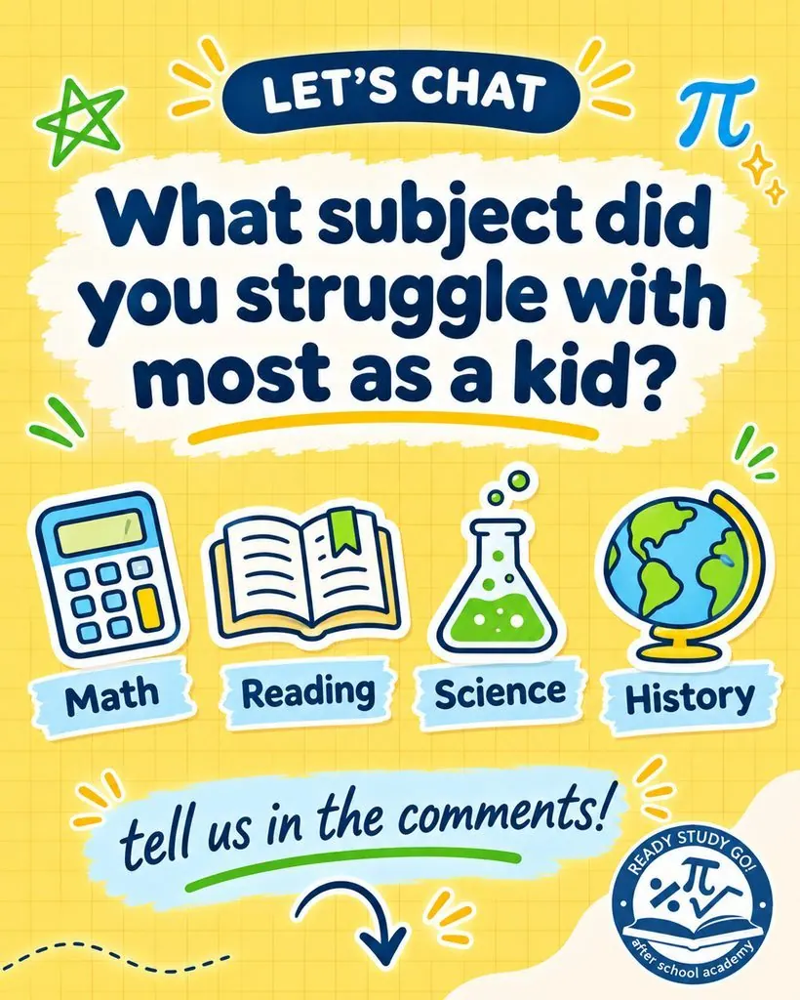